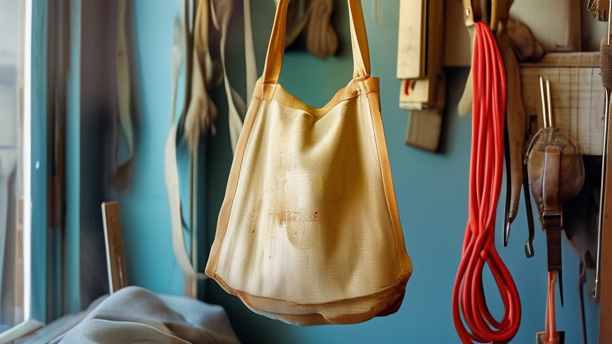
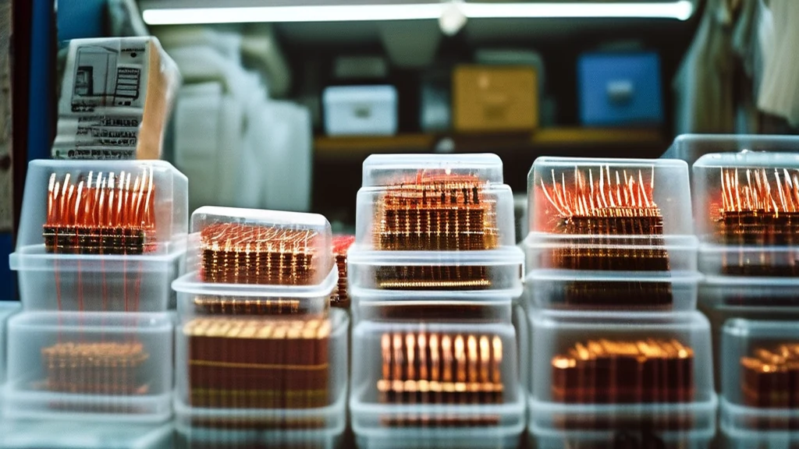
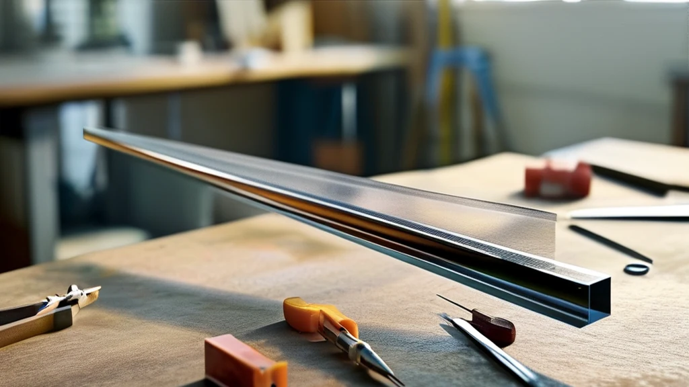
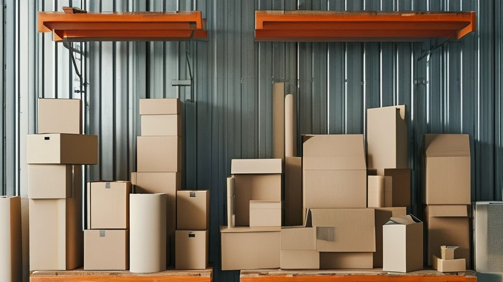

圖片由 AI輔助創作Image by AI
【鄭哥點評】欄目：鄭哥博客點評｜日期：2026-11-24
今日兩條硬件料：一條係香港四人隊用眾籌，把訂單同信任一次過收返嚟；一條係深圳博士隊拿數千萬元 Pre-B，去爬量產。兩間公司都唔缺故事，缺嘅係同一個答案——貨交唔交得出。

圖片由 AI輔助創作Image by AI
一、四個人，四十五日，眾籌 701 萬港幣
香港團隊 ENILINX 做嘅產品叫 TICKEY，一塊彩色墨水屏卡片，賣點係掛喺袋上面，隨手一換就換一幅畫。今年 8 月到 9 月，一個多月時間喺 Kickstarter 拿到 8,214 個支持者，籌到 701 萬多港幣，原本設定嘅目標係 1 萬港幣。
1 萬港幣嘅目標，基本上係象徵性嘅，團隊心裏大概早有底。底氣來自上一單：同一個團隊之前喺 Kickstarter 做過 Flexbar，一塊俾 Windows 同 Mac 用嘅自訂觸控條，籌咗 259 萬港幣；官網到現在仲賣，配套軟件亦一直有更新。
硬件眾籌圈最貴嘅嘢係交付記錄。同一個團隊只要有一次完整交付，第二次開口，老用戶會先站出來；新用戶見到評論區有人話上次件貨收到咗，落單嘅心理門檻就低咗。
把兩個數除一除，平均一個支持者出八百五十幾港幣。呢個價位好關鍵：佢唔係賣零件，而係賣掛喺包上嘅身份感，同參數關係唔大。熱度背後仲有三道坎——交付、關稅、仿品。
三道坎裏面，關稅同仿品最難講價：跨境寄件嘅成本同稅率唔由團隊定，產品一紅，仿品亦唔會等你交付完先出。交付係團隊自己唯一控制得住嘅一道。
來源：AMZ123跨境導航《4人團隊眾籌700萬港幣，爆單後該盯哪筆賬》，2026年11月22日｜https://www.amz123.com/t/35TwxnJL

圖片由 AI輔助創作Image by AI
二、深圳撲翼機器人：由 IFA 拿獎爬到量產
深圳鷹瞰智翼 2025 年 3 月成立，做嘅係仿生撲翼機器人。創始人陳昊係上海交通大學機械工程博士，核心團隊十幾個人，都係交大本碩博背景，研發人員佔比超過七成半。
今年 9 月，第一款消費級產品 Eagle X 喺 IFA 2026 全球首秀，拿到 Best in IFA Next Emerging Technologies Winner，另外入選 Best in Design 同 Best in Sustainability 兩項 Honoree。產品已經進入量產爬坡階段，Kickstarter 眾籌同步推進，瑞典亦設咗產品體驗同銷售點。
11 月 18 日，公司宣佈完成數千萬元人民幣 Pre-B 輪，商湯國香資本獨家投資，深藍資本做獨家財務顧問。錢嘅用途寫得好清楚：下一代撲翼機器人同 Vortrix 流體仿真引擎嘅研發、供應鏈同產線建設，以及海外市場拓展。
由 2025 年 3 月成立，到今年 9 月 IFA 首秀，前後一年半。我睇「量產爬坡」呢四個字最貴：樣機飛得起身，同每個月穩定出貨，係兩門唔同嘅手藝，後者靠產線同供應鏈頂住——正正就係呢筆 Pre-B 要買嘅嘢。
研發人員佔比超過七成半，換句話講，呢間公司到現在仍然係一間研發公司，未算一間工廠。把七成半人嘅成果變成每個月穩定出貨，靠嘅係產線、供應鏈同良率，唔係再多寫幾行代碼。
來源：投資界《「鷹瞰智翼」完成數千萬元Pre-B輪融資，加速空中具身智能商業化》，2026年11月18日｜https://www.sohu.com/a/1103050300_439726

圖片由 AI輔助創作Image by AI
三、鄭哥點評：701 萬換到嘅係時間，唔係利潤
先講錢去邊。眾籌收到嘅 701 萬港幣，本質係預付款——客戶先借錢俾你開模。呢筆錢一路行落去，平台抽一截、打樣同模具一截、屏幕同零件採購一截、跨境物流同關稅一截、售後同換貨再一截，最後剩低嘅先輪到做產品嘅四個人。深圳嗰條路更直接：數千萬元 Pre-B 一入帳，先付研發、產線同供應鏈，即係買「造得出來」嘅能力。所以硬件創業嘅錢，唔係喺毛利度賺，而係喺「一次性成本由邊個墊」呢一環分。四人公司最怕嘅唔係賣唔出，而係賣出 8,214 件之後嘅退換同維修——呢筆錢喺眾籌頁上面冇人計。
邊條最值得學？香港四人隊。SKU 少、單價八百幾港幣、賣身份感、用上一單 259 萬港幣嘅完整交付，去換今次 8,214 人嘅信任——呢條路一個小團隊照得住：先做一個細產品，交得齊，再開口第二次。邊條最唔值得照抄？撲翼機器人。2025 年 3 月成立、交大博士團隊、自己寫流體仿真引擎、數千萬元 Pre-B，門檻同時喺人同錢兩邊，普通小隊照抄只會卡喺量產爬坡。但佢嘅次序值得記住：先喺 IFA 拿獎攞可信度，再眾籌驗證需求，然後爬量產，最後先融一筆大錢。
如果只留一條可執行嘅判斷，我會寫呢句：先問開模、認證同首批庫存嘅一次性成本由邊個墊，再問呢個團隊有冇一次完整交付記錄。兩樣答唔出，就當佢係內容事件，唔係生意。內容事件帶嚟嘅係一次脈衝，一次性成本係實實在在要付嘅。701 萬聽落好多，除開 8,214 個人，每人八百幾港幣——扣完平台費、運費同關稅仲有三成落袋，先有本錢開第二個模；冇三成，第二次開口之前就已經冇貨交。
圖片由 AI輔助創作Image by AI
\[Zheng Ge's Take\] Column: Zheng Ge's blog commentary | Date: 2026-11-24
Two hardware stories today: a four-person Hong Kong team used crowdfunding to collect orders and trust in one go; a PhD-led Shenzhen team took a Pre-B round of tens of millions of yuan to climb the production ramp. Neither company lacks a story. Both face the same question: can the goods actually ship.
圖片由 AI輔助創作Image by AI
1. Four people, forty-five days, HK$7 million
The Hong Kong team ENILINX makes TICKEY, a colour e-ink card designed to hang on a bag and be swapped at will. Between August and September this year, in a little over a month, it drew 8,214 backers on Kickstarter and raised more than HK$7 million against a stated goal of HK$10,000.
A HK$10,000 goal is essentially symbolic; the team almost certainly knew that. The confidence came from the previous campaign: the same team had made Flexbar on Kickstarter, a customisable touch bar for Windows and Mac, which raised HK$2.59 million and is still sold on its own site with software that keeps getting updated.
Divide one number by the other and each backer paid about HK$854. That price point matters: this is not a component sale but a sense of identity clipped to a bag, and specifications have little to do with it. Behind the heat sit three obstacles: delivery, tariffs and copycats.
Source: AMZ123跨境導航《4人團隊眾籌700萬港幣，爆單後該盯哪筆賬》，2026年11月22日 | https://www.amz123.com/t/35TwxnJL
圖片由 AI輔助創作Image by AI
2. A flapping-wing robot in Shenzhen: from an IFA award to the production ramp
Shenzhen Eagle Vision Robotics was founded in March 2025 and builds bionic flapping-wing robots. Founder Chen Hao holds a PhD in mechanical engineering from Shanghai Jiao Tong University; the core team of a dozen people all come from SJTU at undergraduate, masters or doctoral level, and engineers make up more than three quarters of staff.
In September the first consumer product, Eagle X, had its world premiere at IFA 2026, taking Best in IFA Next Emerging Technologies Winner plus honorary mentions in Best in Design and Best in Sustainability. The product is already in the production ramp, a Kickstarter campaign is running in parallel, and there is a product experience and sales point in Sweden.
On 18 November the company announced a Pre-B round of tens of millions of yuan, led solely by SenseTime Guoxiang Capital with Blue Ocean Capital as sole financial adviser. The stated uses are precise: the next generation of flapping-wing robots and the Vortrix fluid simulation engine, supply chain and production line build-out, and overseas expansion.
Source: 投資界《「鷹瞰智翼」完成數千萬元Pre-B輪融資，加速空中具身智能商業化》，2026年11月18日 | https://www.sohu.com/a/1103050300_439726
圖片由 AI輔助創作Image by AI
3. My take: seven million buys time, not profit
Start with where the money goes. The HK$7 million raised is in substance a prepayment: customers lending you the money to cut the tooling. On the way through, the platform takes a slice, sampling and moulds take a slice, panels and components take a slice, cross-border freight and tariffs take a slice, after-sales and replacements take another, and what is left reaches the four people who made the product. The Shenzhen road is starker: the tens of millions from the Pre-B round go first to R&D, the production line and the supply chain, buying the ability to build at all. In hardware, the money is not made in gross margin; it is allocated at the question of who fronts the one-off costs.
Which one is worth learning from? The Hong Kong four. A narrow SKU, a price near HK$854, a product that sells identity, and a completed delivery of HK$2.59 million behind them to earn the trust of 8,214 new backers: a small team can copy that. Build one small product, ship it fully, then ask a second time. Which one is not worth copying? The flapping-wing robot. Founded in March 2025, an SJTU PhD team, its own fluid simulation engine, a Pre-B round in the tens of millions: the barrier sits on both the people and the money side, and an ordinary small team would stall on the production ramp. Its sequence, though, is worth remembering: win an award at IFA for credibility, crowdfund to test demand, climb the ramp, and only then raise real money.
If I keep one executable rule, it is this: first ask who fronts the one-off cost of tooling, certification and the first inventory batch, then ask whether this team has one complete delivery record. If neither can be answered, treat it as a content event, not a business. A content event delivers one pulse; one-off costs are paid in cash. HK$7 million sounds like a lot until you divide it by 8,214 backers and get roughly HK$854 each; if three tenths survive platform fees, freight and tariffs, there is money to cut a second mould. Without that, the second ask arrives before there is anything to ship.